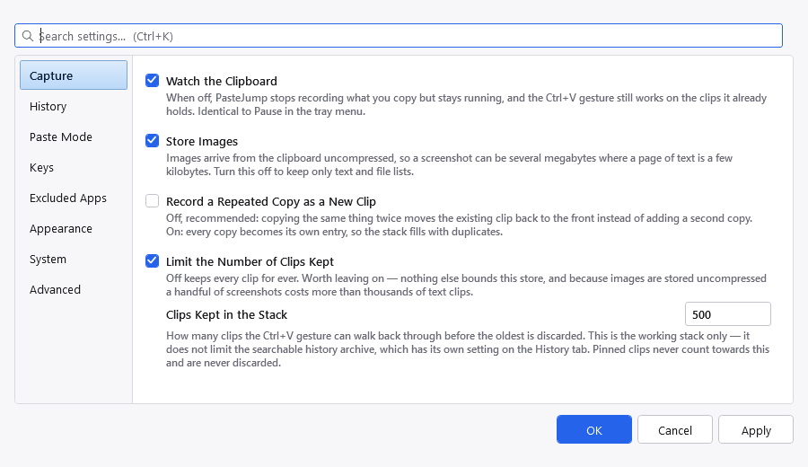
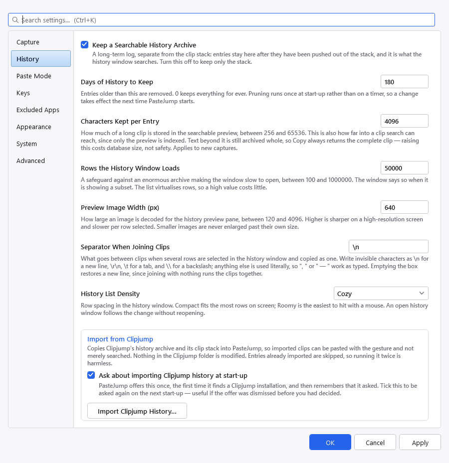
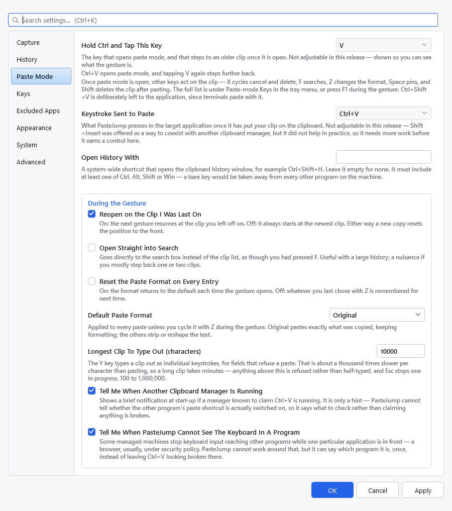
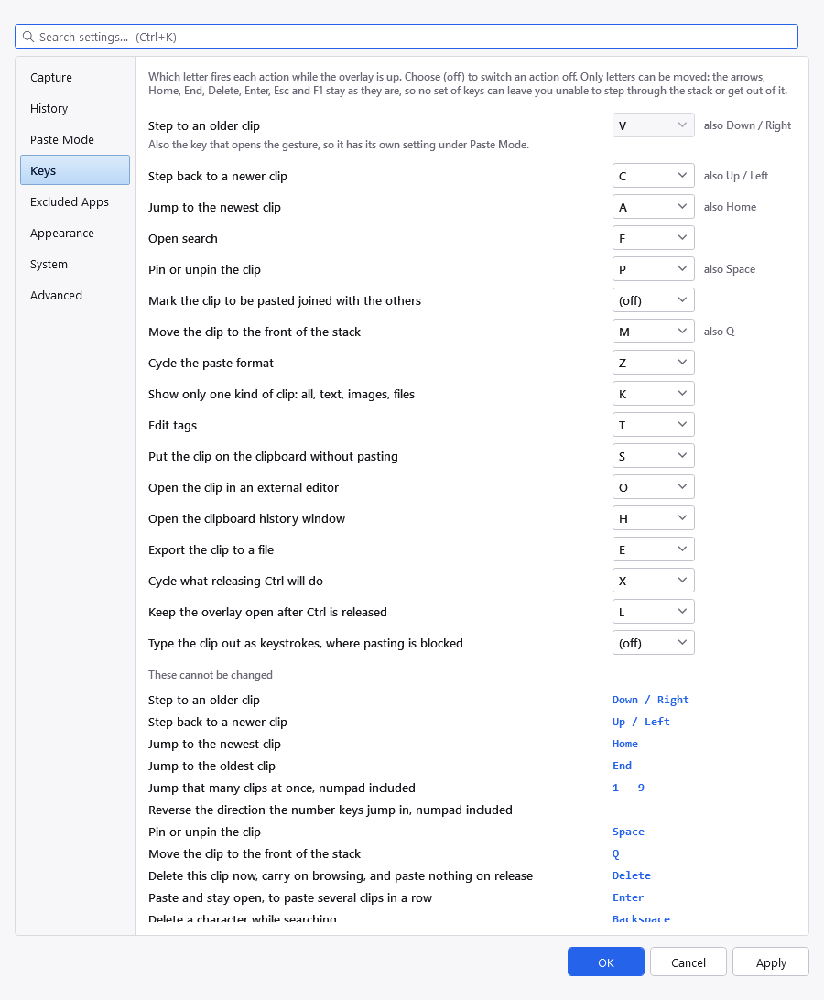
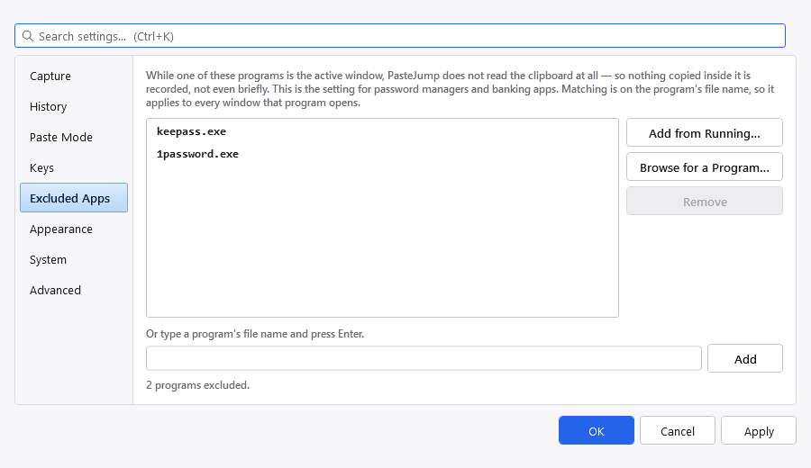
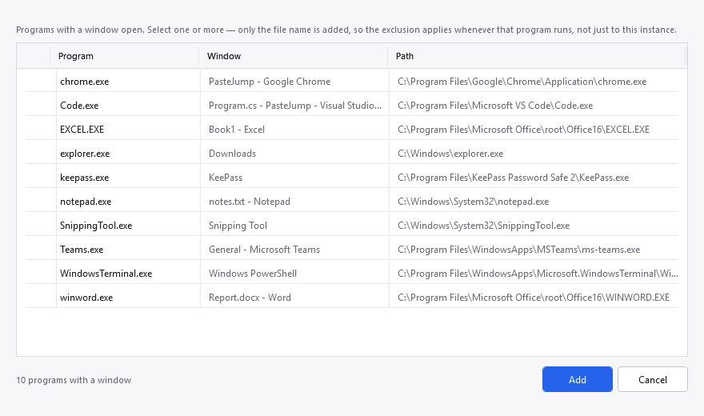
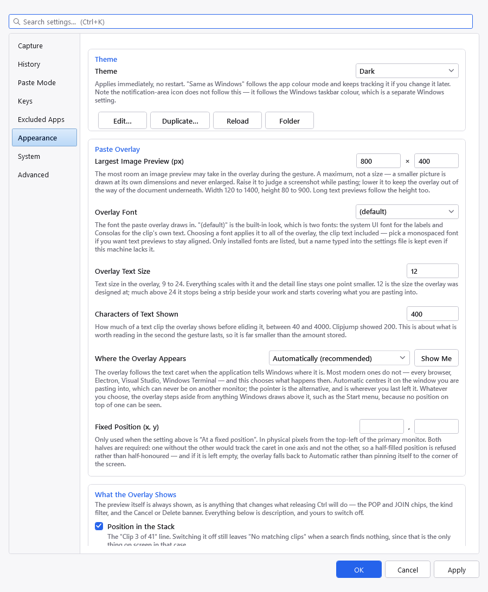
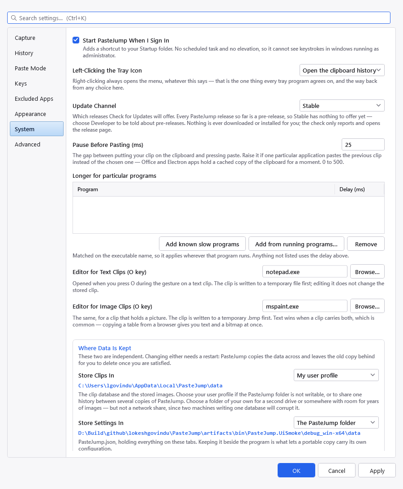
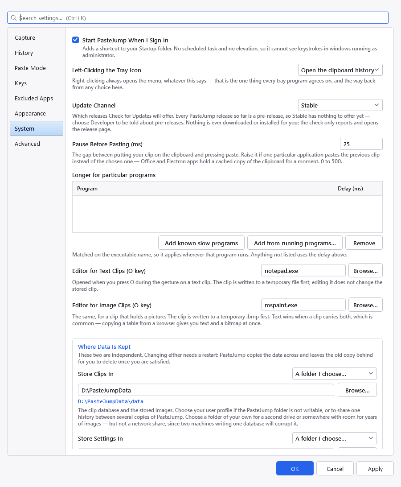
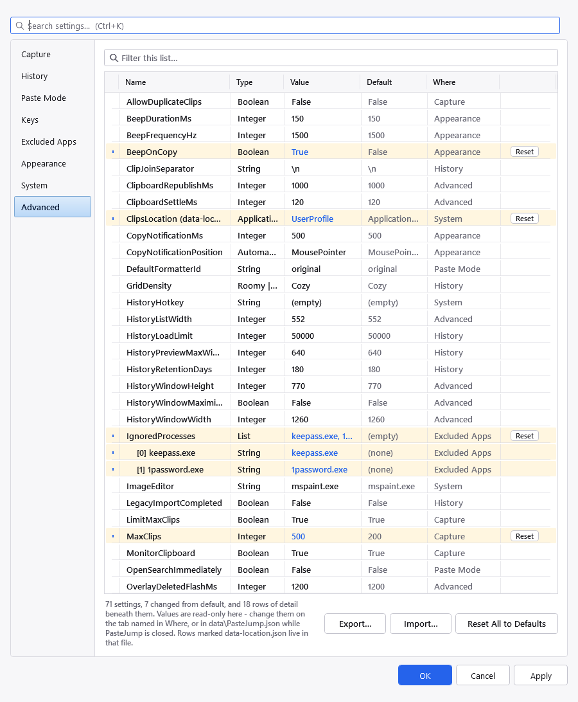

Right-click the tray icon and choose Settings. Apply commits without closing, so a timing value can be nudged and its effect watched; it stays disabled until something actually changes.
The box above the tabs searches all of them. Type a word or two and a list drops down naming each match and
the tab it lives on; press Enter, or click it, and PasteJump switches to that tab, scrolls the
control into view and flashes it.
| Key | Action |
|---|---|
| Ctrl+K | Jump to the search box from anywhere in the dialog, selecting what is there so typing replaces it. Ctrl+E and Ctrl+F do the same — the history window takes all three too. |
| Down | Move into the list of matches. |
| Enter | Go to the highlighted match. |
| Esc | Close the list, leaving the text alone. |
| ✕ | Clear the box. It appears at the right-hand end once there is something to clear, here and in every other search box in PasteJump. |
It searches the explanations as well as the labels, which is most of the point. If you remember that
some setting mentioned Electron applications but not which one it was, typing electron finds it.
Every word you type has to appear somewhere in the setting, so two words narrow rather than widen.
Matches whose label contains what you typed are listed first, so searching theme offers
the Theme control ahead of the settings whose descriptions merely mention it.
This is not the same as the filter on the Advanced tab. That one lists every setting with its stored value and its default, and matches the internal property name; this one matches what you read on the tabs and takes you to the control you can actually change.

Recording, and how many clips the gesture can reach.
| Setting | What it does |
|---|---|
| Watch the Clipboard | Record what you copy at all. Turning this off makes PasteJump inert but resident; the gesture still pastes from clips already held. Same thing as Pause capture on the tray menu. |
| Store Images | Keep images from the clipboard. Off keeps the database small. |
| Record a Repeated Copy as a New Clip | Off — the default — means re-copying something you already have promotes the existing clip to the front instead of adding a second one. |
| Clips Kept in the Stack | How many clips Ctrl+V can
reach. Pinned clips are exempt. The limit can be switched off, but leaving it on is wise: images arrive
uncompressed, so a handful of screenshots costs more than thousands of text clips. |

The archive: how long entries are kept, how much of each one, and the Clipjump import.
| Setting | What it does |
|---|---|
| Keep a Searchable History Archive | Whether to log copies to the archive as well as the stack. |
| Days of History to Keep | Entries older than this are removed. 0
keeps everything for ever. Pruning runs once at start-up rather than on a timer, so a change takes effect
the next time PasteJump starts. |
| Characters Kept per Entry | How much of a long clip goes in the searchable preview. This is also how far into a clip search can reach, since only the preview is indexed. Text beyond it is archived whole either way, so raising it costs database size, not safety. |
| Rows the History Window Loads | A safeguard against an enormous archive making the window slow to open, not a page size. The window says when it is showing a subset. |
| Preview Image Width (px) | How large an image is decoded for the history preview pane. Higher is sharper and slower per row selected. |
| Separator When Joining Clips | What goes between clips when several are copied as one
— see joining several entries. A new line by default. Write invisible
characters as \n, \r\n or \t, and \\ for a backslash; anything
else is used literally, so ", " or " — " work as typed. Emptying
the box restores a new line, since joining with nothing would run the clips together. |
| History List Density | Row spacing in the history window: Compact fits the most rows, Roomy is the easiest to hit with a mouse. The same control appears in that window's own toolbar, and each follows the other while both are open. |
| Ask about importing Clipjump history at start-up | PasteJump offers the import once, the first time it finds a Clipjump installation, then remembers that it asked. Tick this to be asked again next time — useful if the offer was dismissed before you had decided. |
| Import Clipjump History | See Importing from Clipjump. |

How the gesture behaves. The two controls at the top are greyed out — they are disabled in this release.
| Setting | What it does |
|---|---|
| Hold Ctrl and Tap This Key (disabled in this release) |
The letter that opens the gesture. Only letters not already bound to a paste-mode action would be offered, because the trigger doubles as "step to an older clip". |
| Keystroke Sent to Paste (disabled in this release) |
What PasteJump sends to make the focused application paste. Not the same setting as the one above: one is what we listen for, the other what we send. Both are greyed out pending more work — see Running alongside another clipboard manager. |
| Warn when another clipboard manager is running | Shows a notification at start-up if a known rival is detected. It is a guess based on process names, and it says so. |
| Open History With | An optional system-wide shortcut for the history window,
for example Ctrl+Shift+H. Empty by default, deliberately: a global
hotkey takes that chord away from every other application on the desktop. |
| Reopen on the Clip I Was Last On | Whether the gesture resumes where it left off rather than starting at the newest clip. A new copy always resets the position regardless. |
| Open Straight into Search | Start the gesture in search mode. |
| Reset the Paste Format on Every Entry | Whether the format goes back to the default each time, instead of remembering the last one used. |
| Default Paste Format | Original, Plain text, Collapse whitespace, Sentence case or Unindent. |

Which letter fires each action during the gesture, and which actions are switched off.
Pick a letter for any action, or (off) to switch it off. Two actions cannot share a letter and none can take the letter that opens paste mode — both are refused when you press OK, with the clash named, rather than being resolved for you. Swapping two letters over is fine: the check runs once at the end, not as you type.
One action arrives (off): Mark the clip to be pasted joined with the others. It is the one action whose key earned a place in the overlay's hint and then went unused, so it now costs nothing until you want it — give it any free letter here and it behaves exactly as pasting several clips as one describes. Nothing else about joining depends on it: the history window joins by selection, with no key at all.
The first row, Step to an older clip, is greyed out. That key both opens the gesture and steps through it, so it has its own setting under Paste Mode — and that one is not adjustable in this release. It is listed here anyway because a page naming every paste-mode key while omitting the most important one reads as an omission.
Only letters can be moved. The arrows, Home, End, Delete,
Enter, Esc and F1 stay where they are. That is a safety property rather
than an omission: no set of keys you choose can leave you unable to step through the stack, and
Esc can never stop cancelling.
Where a row says also Space or also Q, that key fires the action whatever the letter says
— which is what makes switching an action off safe rather than lossy. Turn pinning off and
Space still pins.
An action switched off does nothing; it does not hand its key back. While the overlay is up the
gesture owns the keyboard, so an unbound letter is still held back from the application underneath — the
same rule that stops Ctrl+S saving while you browse clips. What changes is that the
letter becomes typeable in search, like any other unbound letter.
Moving an action off a letter frees that letter for the paste-mode trigger, and the foot of the tab says how
many are free. The key card on F1 always shows your letters rather than
the defaults.
Scroll to the foot of the tab for every key that no set of bindings can take away. Some of them also appear as an also … note beside a letter above; the duplication is deliberate, because that note answers "what else fires this action" and this list answers "what is fixed".
| Key | Action |
|---|---|
| ↓ → | Step to an older clip |
| ↑ ← | Step back to a newer clip |
| Home | Jump to the newest clip |
| End | Jump to the oldest clip |
| 1 – 9 | Jump that many clips at once, numpad included |
| − | Reverse the direction the number keys jump in, numpad included |
| Space | Pin or unpin the clip |
| Q | Move the clip to the front of the stack |
| Delete | Delete this clip now and carry on browsing |
| Enter | Paste and stay open, to paste several clips in a row |
| Backspace | Delete a character while searching |
| Shift | Hold it, then release Ctrl, to delete the clip after pasting |
| Esc | Cancel and restore the previous clipboard |
| F1 | Show the key list |
Esc matters most of all: a session that could not be cancelled would present as a dead
keyboard.

Processes whose copies are never recorded. Browse to one, or pick it from the running windows.

Add from running programs… lists everything with a window open, so you can pick a program without knowing where it is installed. Only the file name is added, so the exclusion applies whenever that program runs — not just to the copy running now.
Processes listed here are ignored: while one of them is in the foreground, nothing it copies is recorded. Password managers are the obvious case. Add one by browsing to it, by picking from the list of running windows, or by typing the executable name.

Theme, list density, and everything about the overlay drawn during the gesture.
| Setting | What it does |
|---|---|
| Theme | Light, Dark, Same as Windows — the default — or any of seventeen others, or one you write yourself. It applies as you move through the list, so you can judge it; Cancel puts the old one back. See Themes. Note the tray icon does not follow this — it follows the Windows taskbar colour, which is a separate Windows setting. |
| Edit… / Duplicate… / Reload / Folder | For working on themes: open this one's file, start a new one from the colours on screen, re-read the folder after saving an edit, or open the folder itself. Again, Themes has the detail. |
| Overlay Font | The font the paste overlay draws in. (default) is the built-in
look, which is two fonts: the system UI font for the labels and Consolas for the clip's own text.
Choosing a font applies it to all of the overlay, the clip text included — so pick a monospaced font if
you want text previews to stay aligned. The list shows each font in its own face, and only fonts installed here; a
name typed straight into the settings file is kept even if this machine lacks it, so a file can travel between
machines. Colours are not here because they come from the theme. |
| Overlay Text Size | 9 to 24. The whole overlay scales with it, keeping the one size difference it has always had: the detail line stays a point smaller than the clip's text. 12 is what it was designed at. Well above 24 it stops being a strip beside your work and starts covering what you are pasting into, which is why that is the ceiling. |
| What the Overlay Shows | Switches for everything the overlay says beyond the clip itself,
all on to begin with: the position in the stack, the paste format, tags, the application it was copied from, the
PINNED marker, when the clip was copied, and the key reminder along the bottom. The row under the preview is chosen per kind of
clip in a small grid — details and size, against Text, Image and File — because the three do not
report the same thing: text gives lines and characters, an image its resolution, a copied file its line count. So
"resolution for pictures, nothing for text" is expressible. A clip that is neither text nor an image follows
the File column. With both boxes off for a kind, that row disappears for clips of that kind rather than leaving an
empty strip — unless When It Was Copied is on, which sits at the right of that same row for every kind
and keeps it. What cannot be switched off is anything that changes what
releasing Ctrl will do — the POP chip, the JOIN count, the kind filter and the
Cancel or Delete banner — because hiding one of those would arm a deletion you could not see. See
the gesture. |
| Largest Image Preview (px) | The most room an image preview may take in the overlay during the gesture. A maximum, not a size: a smaller picture is drawn at its own dimensions and never enlarged. Raise it to judge a screenshot while pasting; lower it to keep the overlay out of the way of the document underneath. |
| Characters of Text Shown | How much of a text clip the overlay shows before eliding it. About what is worth reading in the second the gesture lasts, so it is far smaller than the amount stored. |
| Where the Overlay Appears | The overlay follows the text caret whenever the application tells Windows where it is. Most modern ones do not — see Where the overlay appears for which — and this chooses what happens then. Automatically centres it on the window being pasted into, which can never be on another monitor; At the text caret, or the pointer is what PasteJump did before, and puts it wherever the mouse was last left; At the mouse pointer uses the pointer even when there is a caret; Centred on the window ignores the caret entirely; In the bottom-right corner puts it where Windows puts its own notifications, on the monitor you are working on; and At a fixed position pins it to the coordinates below. Whatever you choose, the overlay steps aside from anything Windows draws above it, such as the Start menu — there is no position on top of one that could be seen. |
| Fixed Position (x, y) | Only used when the setting above is At a fixed position. Physical pixels from the top-left of the primary monitor. Both halves are required: one without the other would track the caret in one axis and not the other, so a half-filled position is refused rather than half-honoured — and left empty it falls back to Automatically rather than pinning the overlay to the corner of the screen. |
| Show a Key Reminder Along the Bottom | One muted line across the foot of the
overlay naming the keys worth knowing when you have lost your place: A back to the newest clip,
stepping, X to delete, Esc to cancel, and F1 for the full list. On by
default, because a gesture with no window and no menu has nowhere else to advertise itself. Turn it off once
it is in your fingers. |
| Show a Brief Notification | A small popup near the cursor confirming a copy was recorded, with its duration below — 1 to 10000 milliseconds, defaulting to 500. That is long enough to read the clip count and gone before it is in the way; raise it if you want to read the preview. It never takes focus, and it is suppressed while the paste overlay is open. |
| Where It Appears | The same choices as Where the Overlay Appears above,
because it is the same mechanism. The pointer is the default here and a sound one: a copy is often made with
the mouse — select, then Ctrl+C — so the pointer is where you were
looking. Choose one of the others if you copy from the keyboard, where the pointer may be anywhere, including
on another screen. A fixed position uses the same coordinates as the overlay's. |
| Beep | A short tone on each capture, with its pitch and length. Useful when the notification is off, or when the copy happened on a monitor you were not looking at. |

Start-up, the paste timing, the external editors, and where the data lives.
| Setting | What it does |
|---|---|
| Start PasteJump When I Sign In | Adds a shortcut to your Startup folder. No scheduled task and no elevation, so it cannot see keystrokes in windows running as administrator. |
| Left-Clicking the Tray Icon | What the left button does: open the clipboard history (the default, and what PasteJump has always done), open the menu, open settings, or nothing. Many tray programs open their menu on a left click, so which one feels right depends on what you are used to. Right-clicking always opens the menu whatever this says — that is the one convention every tray program shares, and it is the way back from any choice made here. |
| Update Channel | Which releases Check for Updates will offer: Stable, Stable (delayed 1 week), or Developer. Stable is the default and never offers a pre-release; choose Developer to be told about pre-releases as they appear. If no stable release exists yet, the check says so rather than claiming nothing has been published. The delayed channel holds a release back for a week so somebody else meets a bad one first. Nothing is ever downloaded or installed for you; the check reports and opens the release page. See Overview. |
| Longer for particular programs | Per-application overrides for the pause below. The delay
is a property of the program you are pasting into rather than of PasteJump, so raising the global value to
cure one application slowed every paste everywhere. Add a program with Add from running programs… and edit
its number in place; anything not listed uses the global delay. Matched on the executable name, so it applies
wherever that program runs.
Add known slow programs fills the table with the usual suspects — Word, Excel, PowerPoint, Outlook, OneNote, Teams, Slack, Discord, VS Code, Remote Desktop and Citrix — at a conservative starting delay. They are starting points, not measurements: the right number depends on your machine, so raise one until the wrong clip stops appearing. Programs you have already listed are left alone, so a value you have tuned is never overwritten and pressing the button twice does nothing the second time. |
| Pause Before Pasting (ms) | The gap between putting a clip on the clipboard and sending the paste keystroke. Raise it if a particular application pastes the previous clip: Office, Electron shells and remote-desktop clients cache the clipboard, and a keystroke arriving too early can be served from that stale cache. |
| Editor for Text Clips / Image Clips | What the O key opens. Two
settings, because Notepad opening a bitmap is useless. |
| Store Clips In | Where the database and the image blobs live. Three choices: the
PasteJump folder (the default, and what keeps a portable copy self-contained), your user profile — move
it there when the program folder is not writable, which unzipping under C:\Program Files is the
usual way to discover — or A folder I choose…, for a second drive or somewhere with room for
years of images. That last one reveals a box and a Browse button; the folder is created and tested for writing
before the change is accepted, so a path that cannot be used is refused rather than leaving PasteJump unable
to open its database after the restart. |
| Store Settings In | Where PasteJump.json lives. Rarely worth
moving: keeping it beside the program is what lets a portable copy carry its own configuration. |
The two locations are independent, and moving either needs a restart. PasteJump restarts,
copies that half across, and leaves the old copy in place for you to delete. They cannot live in the
settings file, because one of them decides where that file is — they are in
data-location.json beside the executable, along with the folder you chose if you chose one.

Choosing A folder I choose… reveals the path and a Browse button. Each half is independent, so the clips can live on another drive while the settings stay beside the program.
A network share is a bad choice for clips. The clip store is a SQLite database: a share that goes offline mid-session fails like any other disconnected file, and two computers pointed at the same folder will corrupt it. PasteJump does not refuse a share — it is your folder — but it cannot make that safe either.

Every setting with the value a fresh install would have. Changed rows are banded and carry a Reset button.
Every setting PasteJump has, with its current value and the value a fresh install would have — including the two data locations, which live in their own file and are labelled as such. Nothing is left out: if a setting exists, it is on this page. Rows that differ from their default are banded and marked, which is the first thing to check when behaviour is surprising.
Where names the tab that holds the control for each setting, so the page that cannot change a value still
tells you where to. The filter box matches on name, value or tab — so typing
appearance lists everything that tab owns.
A setting whose Where says Advanced has no control on any tab and is edited in
PasteJump.json. Two of them are there because they are matters of taste or repairs for one stubborn
application rather than settings that change what the program does:
| Name | What it does |
|---|---|
| overlayDeletedFlashMs | How many milliseconds the overlay shows DELETED after the
Delete key. 0 never shows it. |
| typeOutCharDelayMs | Milliseconds of pause between batches of twenty characters when a
clip is typed out with Y. 0, the default, types them back to back, which is what nearly
everything accepts; raise it only for a window that drops input arriving faster than a person could type. |
Settings that hold several values are broken out. Three of them do: the paste-mode key bindings, the
per-application paste delays, and the excluded programs. Each appears as its parent row followed by one indented row
per part — so every key binding is listed with the letter in force and the letter it ships with, an action you
have switched off reads (off), and each excluded program gets a line of its own. Those indented rows are
detail rather than settings: they carry no Reset button, because putting one binding back would mean rewriting part
of a stored string, and the tab that owns it already does that properly. The count at the bottom keeps them separate
for the same reason.
Values are read-only here, deliberately: one place to edit each setting is what stops two editors disagreeing
about what is valid. Change them on the tab named in Where, or in PasteJump.json while
PasteJump is closed. Two things can be done from this page:
None of these writes anything until you press OK or Apply, so Cancel still abandons a reset or an import.
An export does not carry where your data is kept. Store clips in and Store settings in live
in data-location.json rather than with the settings, and they are paths that only mean something on
the machine they were set on — carrying D:\Clips to a laptop with no D: drive would be worse
than useless. An import therefore never moves anyone's clips.
The one-time Clipjump import flag is also kept local, so importing a configuration from a machine that had already done that import does not suppress the offer on one that has not.